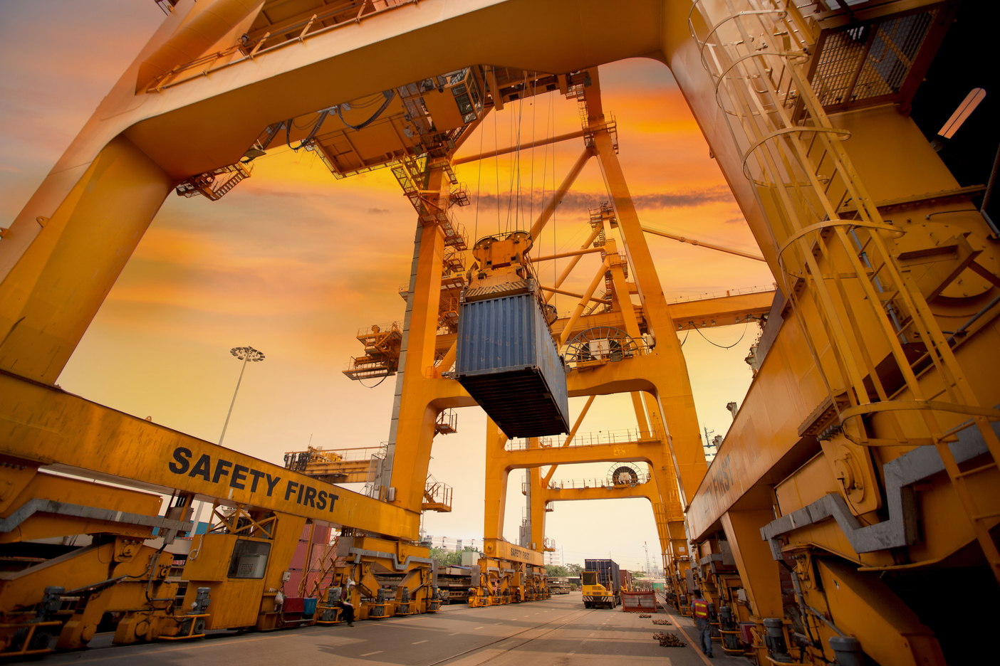
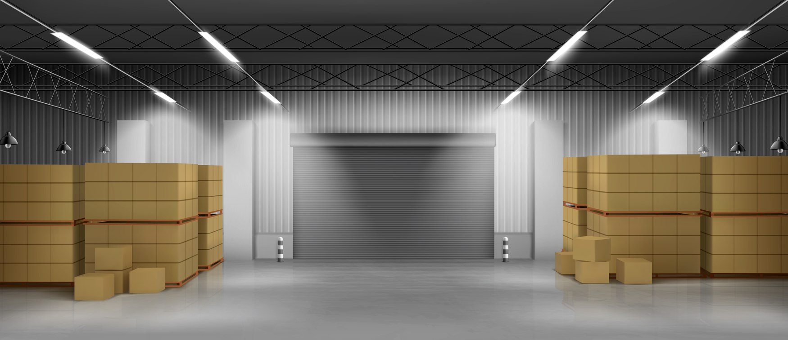
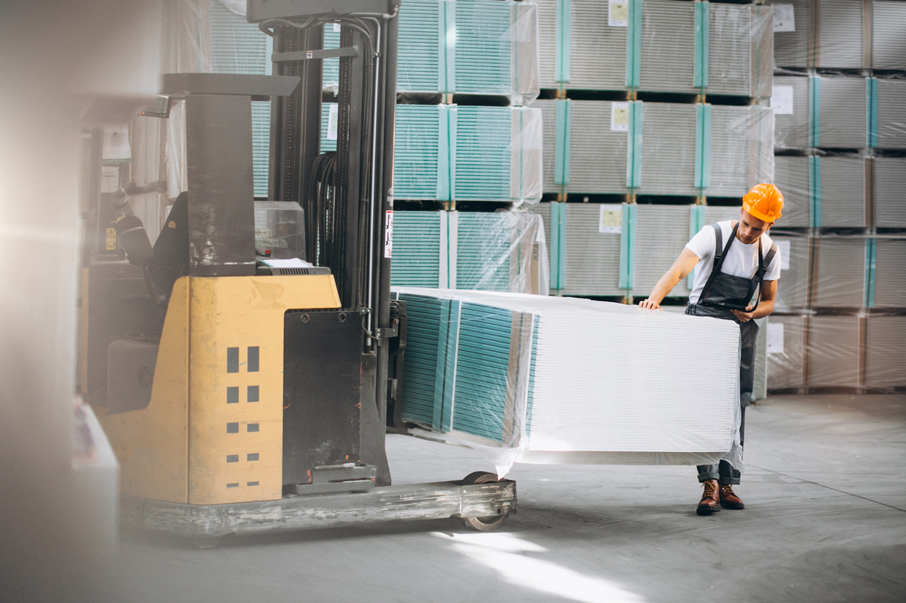
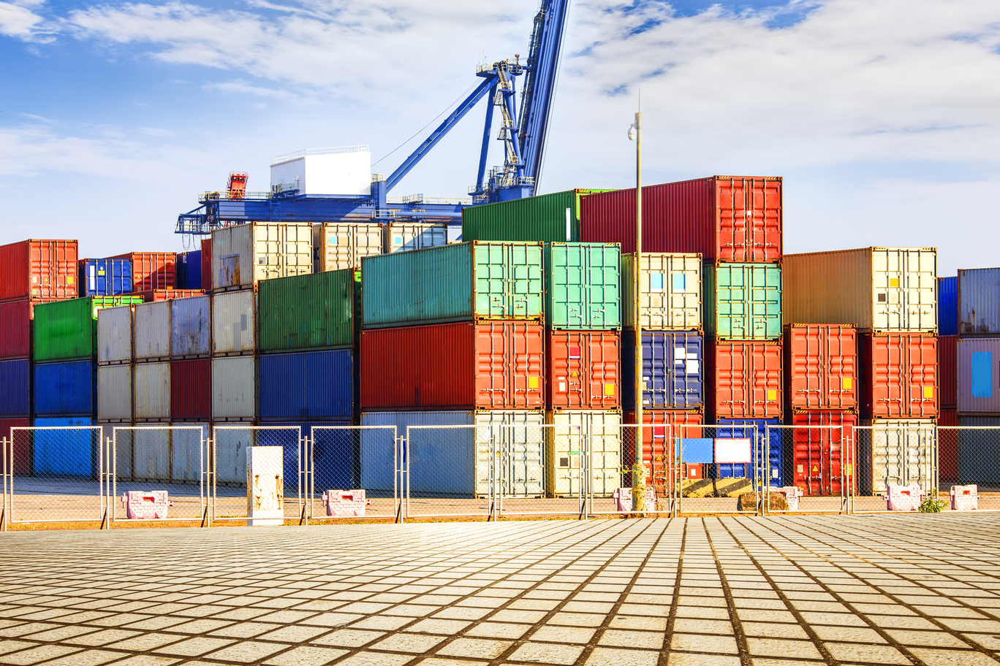

Cold Storage & Reefer Container
Layanan yang menyediakan ruangan berpendingin yang dirancang khusus dengan kondisi suhu tertentu dan akan digunakan untuk menyimpan berbagai macam produk dengan tujuan untuk mempertahankan kesegarannya sesuai standar kualitas mutu. TKUI selalu bertekad meningkatkan kualitas penanganan dengan mengutamakan higienitas produk anda sehingga daya tahan dan kesegarannya selalu terjaga dan aman. Dengan sistem WMS terpadu, kami pastikan produk anda tidak tercamput dengan produk yang bisa merusak dan mencemarkan barang anda. Dengan WMS, produk anda dapat dengan cepat dan mudah diidentifikasi. Kami juga menyediakan sistem recording temperature yang secara real time sehingga memudahkan anda melakukan pengecekan temperatur produk anda dari waktu ke waktu. Kami menyediakan kontainer reefer dengan kualitas yang terjaga dengan baik yang dapat dijadikan tempat penyimpanan sementara dan bergerak sampai tujuan akhir.


Sistem Logistik Terpadu
Layanan logistik yang menjadi bagian terintegrasi antara warehouse, trucking, kurir dan kegiatan pengurusan dokumen ekspor/impor yang memudahkan manajemen distribusi produk anda. Dengan sistem ini, anda dapat menggabungkan rangkaian logistik barang anda tersebut dari titik awal (origin point) sampai titik tujuan akhir barang anda. TKUI membantu menyiapkan warehouse yang representative dengan standar mutu dan keamanan yang tinggi yang dilengkapi sistem WMS dan peralatan pendukung yang memadai. Kami menerima dan menangani barang anda sesuai standar kustom produk anda sampai pada proses pemuatan produk anda baik secara konsolidasi/transit dan cross-dock ke tahap distribusi. Dengan pengalaman dan standar yang tinggi, TKUI didikung armada trucking dan kurir yang profesional dalam menangani produk anda, baik secara produk muat sebagian (Less Container Load) dan muat penuh (Full Container Load). Pengurusan dokumen di pelabuhan untuk persiapan kegiatan ekspor atau impor anda juga dapat kami bantu dengan dukungan tenaga petugas PPJK yang profesional dan amanah. Kami senantiasa memberikan solusi dan strategi dengan koordinasi awal untuk setiap kasus kegiatan ekspor dan impor anda sehingga tercapai ketepatan waktu status shipment ekspor atau impor anda.

Supply Chain Management
Layanan konsultasi dalam penyelesaian permasalahan manajemen rantai pasok dalam peningkatan mutu dan keamanan produksi anda. Kesulitan dalam pengurusan dan penyiapan bahan baku yang anda butuhkan, proses penyimpanan bahan baku dan produk dengan cara yang tepat, efektif dan efisien sampai pada penyusunan strategi yang pas untuk penjualan produk anda ke konsumen agar lebih kompetitif dan berkualitas. TKUI memiliki tenaga ahli yang tersertifikasi di bidang Supply Chain Management oleh Badan Nasional Sertifikasi Profesional (BNSP) dengan jaringan koneksi dan pemahaman yang luas sehingga menjamin kelangsungan bisnis produksi usaha anda.
Trading Solution
Layanan jasa pengadaan dan pembelian bahan baku/produk jadi dengan kualitas dan jaminan mutu sesuai permintaan spesifikasi pelanggan. Kami dapat membantu menyiapkan dokumen spesifikasi dan desain kebutuhan produk yang anda butuhkan bila perlu sebelum melakukan buying pada jenjang procurement. TKUI memberikan konsultasi dan solusi dalam tahap payment sehingga memudahkan anda dalam mengatur cash flow perusahaan anda.


Sistem Digital Bisnis
Layanan yang memberikan opsi terbaik dalam pembangunan infrastruktur protokol internet Perusahaan anda agar lebih efektif dan efisien yang disesuaikan dengan kebutuhan anda. TKUI dapat memberikan alternatif solusi dari kebutuhan sistem aplikasi yang berbasis akuntansi dan aplikasi kustom yang ditampilkan secara web based dan realtime yang mudah diakses dimana saja. Dengan pengalaman dan tenaga ahli yang mumpuni kami mampu mewujudkan sistem yang memberikan kenyamanan dan kelancaran usaha anda.